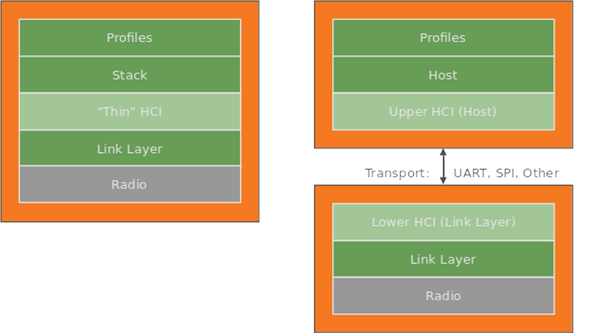
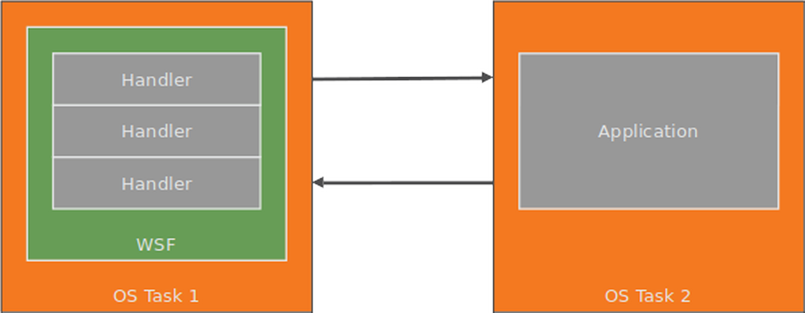
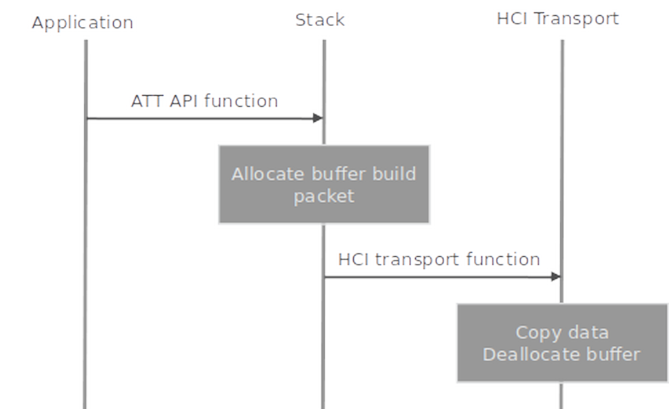
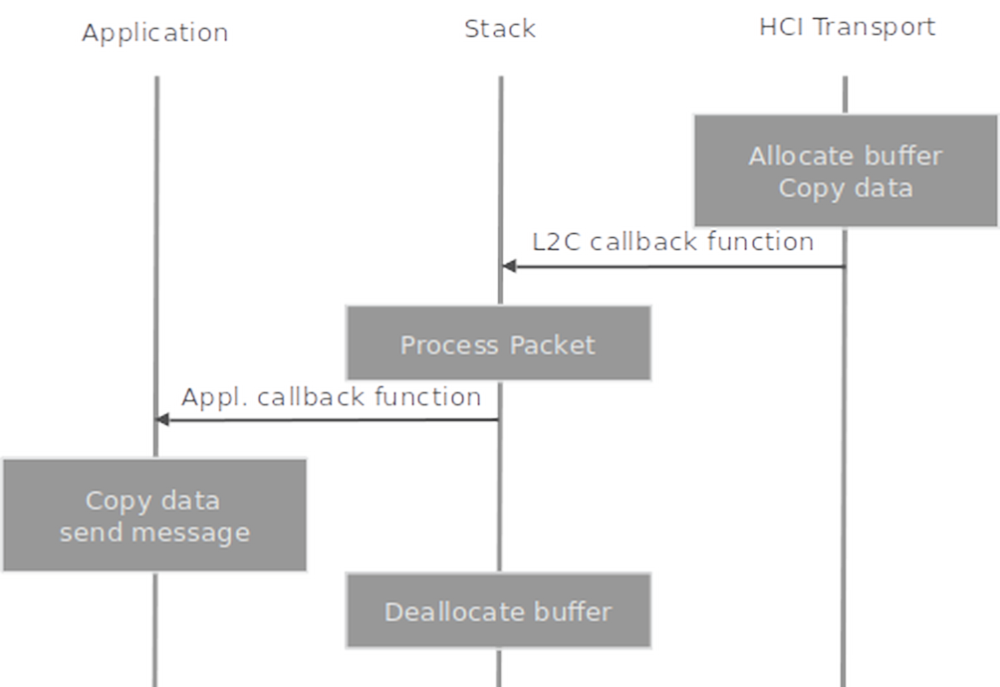
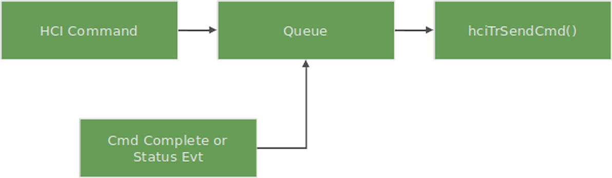

BLE Host Developer’s Guide
Introduction
This document is the Developer’s Guide for the em | bleu Host software.
Audience
This book is written for experienced software engineers who might or might not have experience with em | bleu products. Such engineers typically have experience writing Bluetooth applications but might have limited experience with em | bleu software. The reader is assumed to have embedded C software experience.
Abbreviations
Definitions of abbreviations used in this document are listed below:
ACL: Asynchronous Connectionless data packet
AD: Advertising Data
ARQ: Automatic Repeat reQuest
ATT: Attribute Protocol, also attribute protocol software subsystem
ATTC: Attribute Protocol Client software subsystem
ATTS: Attribute Protocol Server software subsystem
BIG: Broadcast Isochronous Group
BIS: Broadcast Isochronous Stream
BLE: Bluetooth Low Energy
CCC: Client Characteristic Configuration
CCCD: Client Characteristic Configuration Descriptor
CID: Connection Identifier
CIG: Connected Isochronous Group
CIS: Connected Isochronous Stream
CSRK: Connection Signature Resolving Key
DM: Device Manager software subsystem
GAP: Generic Access Profile
GATT: Generic Attribute Profile
HCI: Host Controller Interface
IRK: Identity Resolving Key
JIT: Just In Time
L2C: L2CAP software subsystem
L2CAP: Logical Link Control Adaptation Protocol
LL: Link Layer
LLCP: Link Layer Control Protocol
LTK: Long Term Key
MITM: Man In The Middle pairing (authenticated pairing)
OOB: Out Of Band data
SMP: Security Manager Protocol, also security manager protocol software subsystem
SMPI: Security Manager Protocol Initiator software subsystem
SMPR: Security Manager Protocol Responder software subsystem
STK: Short Term Key
WSF: Wireless Software Foundation software service
References
The following documents are referenced by this document.
1: Bluetooth SIG, “Bluetooth Core Specification”, Version 5.4, January 31, 2023.
2: Packetcraft, Inc., “WSF Developer’s Guide”
System Context
The BLE Host software system consists of two main components:
em | bleu Host Host
em | bleu Profiles Profiles
The software system is dependent on WSF and PAL. WSF is an OS porting layer. It provides general-purpose software services such as queues, timers, and buffer management. PAL is the hardware platform abstraction layer. It provides the platform specific implementation to the hardware’s BSP libraries.
System Configuration
The Host and Profiles are designed to support single-chip SoC systems and dual-chip systems.
When operating in a single-chip system the Host and Profiles run on the processor inside the SoC. A “thin” HCI layer adapts to the software interface of the target’s BLE Link Layer.
When operating in a dual-chip system the Host and Profiles run on a microcontroller and communicate with a BLE Controller chip over a wired interface such as UART or SPI. A standard transport-based HCI layer manages the communication between the two devices.
{kind=link}
Figure 2-1. Host and Profiles in a single-chip SoC system and dual-chip system.
em | bleu Profiles
Profiles consists of Sample Application, interoperable Bluetooth Profiles and Services components and an Application Framework for simplified application development and porting.
{kind=link}
Figure 2-2. em | bleu Profiles software system.
Sample Applications
em | bleu Bluetooth Low Energy sample applications provides example source code for products such as a proximity keyfob, health sensor, and watch. The sample applications are designed with a product-oriented focus, with each application supporting one or more BLE profile. The sample applications interface to the Profiles and Services and the Application Framework.
Profiles and Services
The profiles and services are interoperable components designed to Bluetooth profile and service specification requirements. The profiles and services are used in applications to implement particular profile and service features.
The profiles are implemented in separate files for each profile role. The services, however, may be grouped together in files based on their logical function and the profile they are used by.
Application Framework
The Application Framework performs many operations common to BLE embedded applications, such as:
Application-level device, connection, and security management.
Simple user interface abstractions for button press handling, sounds, display, and other user feedback.
An abstracted device database for storing bonding data and other device parameters.
{kind=link}
Figure 2-3. Application Framework software subsystem.
The Application Framework consists of several modules, each with their own API interface file:
Main: Device, connection, and security management.
UI: User interface abstraction.
DB: Device database.
HW: Hardware sensor interface abstraction.
em | bleu Host
The Host is complete host protocol stack solution for single-mode BLE devices. It consists of five protocol layers:
ATT: Attribute protocol.
SMP: Security manager protocol.
L2C: L2CAP protocol.
HCI: Host controller interface protocol.
DM: Device manager.
{kind=link}
Figure 2-4. em | bleu Host software system.
ATT
The ATT subsystem implements the attribute protocol and generic attribute profile (GATT). It contains two independent subsystems: The attribute protocol client (ATTC) and attribute protocol server (ATTS).
ATTC implements all attribute protocol client features and is designed to meet the client requirements of the generic attribute profile. ATTC can support multiple simultaneous connections to different servers.
ATTS implements all attribute protocol server features and has support for multiple simultaneous client connections. ATTS also implements the server features defined by the generic attribute profile.
For more information see the ATT API.
SMP
The SMP subsystem implements the security manager protocol. It contains two independent subsystems:
The initiator (SMPI). SMPI implements the initiator features of the security manager protocol and has support for multiple simultaneous connections.
The responder (SMPR). SMPR implements the responder features of the security manager protocol and has support for only one connection (by Bluetooth specification design).
SMP also implements the cryptographic toolbox, which uses AES. The interface to AES is asynchronous and abstracted through WSF. SMP also implements functions to support data signing.
L2C
The L2C subsystem implements the BLE L2CAP protocol. It is a substantially scaled-down version of regular Bluetooth L2CAP.
In the TX data path, the main function of L2C is building L2CAP packets and sending them to HCI. In the RX data path, its main function is receiving packets from HCI and routing them to SMP, ATT, or L2CAP connection-oriented channels.
L2C also implements the connection parameter update procedure.
HCI
The HCI subsystem implements the host-controller interface specification. This specification defines commands, events, and data packets sent between a BLE protocol stack on a host and a link layer on a controller.
The HCI API is optimized to be a thin interface layer for a single chip system. It is configurable for either a single chip system or traditional system with wired HCI.
This configurability is accomplished through a layered implementation. A core layer can be configured for either a single chip system or wired HCI. A transport and driver layer below the core layer can be configured for different wired transports such as UART.
DM
The DM subsystem implements device management procedures required by the stack. These procedures are partitioned by procedure category and device role (master or slave). The following procedures are implemented in DM:
Advertising and device visibility: Enable/disable advertising, set advertising parameters and data, set connectability and discoverability.
Scanning and device discovery: Start/stop scanning, set scan parameters, advertising reports, name discovery.
Connection management: Create/accept/remove connections, set/update connection parameters, read RSSI.
Security management: Bonding, storage of security parameters, authentication, encryption, authorization, random address management.
Local device management: Initialization and reset, set local parameters, vendor-specific commands.
DM procedures support the Generic Access Profile (GAP) when applicable.
WSF
The Wireless Software Foundation (WSF) is a simple OS wrapper, porting layer, and general-purpose software service used by the software system. The goal of WSF is to stay small and lean, supporting only the basic services required by the stack. It consists of the following:
Event handler service with event and message passing.
Timer service.
Queue and buffer management service.
Portable data types.
Critical sections and task locking.
Trace and assert diagnostic services.
Security interfaces for encryption and random number generation.
For more information see WSF Developer’s Guide.
Architecture
This section describes the software architecture used by the em | bleu Host.
Interfaces
The software system uses function calls and callback functions in its APIs, as described below.
Message Passing API Functions
Message passing API functions result in a message being sent to the task running the stack. These functions typically involve a complex operation, such as creating a connection, and do not access internal (private) data.
Direct Execute API Functions
Direct execute API functions run entirely in the context of the calling function. These functions typically involve simple operations like reading or setting internal data. Task scheduling is locked when accessing internal data.
Callback Functions
Callback functions are implemented by the client using the protocol stack and execute in the context of the stack.
Callback functions are used to send events and data to the client.

Figure 3-1. Message passing and direct execute interfaces.
Event Handlers and Tasks
em | bleu software system defines an event handler service that forms a basis for the asynchronous communication mechanisms used in the system. An event handler can receive messages and events. Each software subsystem typically has its own event handler; for example, each layer of the protocol stack has its own event handler.
The stack is designed to be flexible and allow for different task architectures. The software system does not define any tasks but defines some interfaces to tasks. It relies on the target OS to implement tasks and manage the timer and event handler services from target OS tasks. A typical single-chip software system will use separate tasks for the application, stack, and link layer. However there is nothing in the design of the protocol stack or profiles that prevent them from being run in the same task as other software systems.
{kind=link}
Figure 3-2. Example system showing event handlers executing within an OS task.
Data Path
This section describes the data flow between applications and the HCI.
TX Path
The TX data path covers the flow of data as it is sent from the application, through the stack, and then on to HCI.
When copying there can be two data copies in the TX data path:
When data is sent from the application to the stack
When data is sent from the stack to HCI
As an optimization the Host provides zero-copy APIs that use a single data buffer between the application and stack. A zero-copy API is also utilized between the stack and HCI when running on a single CPU architecture.
The stack does not copy data internally between layers.
The allocation and deallocation of data buffers takes place at the point where data is copied. When the application sends data to the stack, a buffer is allocated and data is copied to the buffer.
When data is sent from the stack to the HCI or the link layer, the data is copied to an HCI or link layer buffer and the stack buffer is deallocated.
{kind=link}
Figure 3-3. TX data path.
In this scenario, the application calls an ATTC API function which initiates transmission of a packet. The ATTC function allocates a buffer and builds an attribute protocol packet, while reserving space at the start of the packet for the L2CAP and HCI headers. ATTC looks up the HCI handle for this instance and calls an L2C function, passing the handle along with the packet and packet length to L2C.
L2C checks that the link for this handle is connected. If it is not, L2C discards the packet.
Note: It is OK to silently discard the packet in this race condition because ATTC will be notified immediately afterwards that the link has been disconnected.
L2C then builds the L2CAP and HCI headers for the packet and calls an HCI function to send the packet to HCI.
HCI then processes the packet. The detailed operation of HCI depends on the system configuration. In general HCI will copy the data, deallocate the buffer, and queue the data.
RX Path
The RX data path covers the flow of data as it is sent from HCI, through the stack, and then on to the application. Like the TX path, there can be two data copies in the RX data path: when data is sent from the stack to the application and when data is sent from HCI to the stack. The stack does not copy data internally between layers.
Buffers are allocated by the HCI layer and then deallocated internally by the stack.
{kind=link}
Figure 3-4. RX data path.
HCI receives a data packet. It allocates a WSF buffer and copies the entire data packet, including the HCI handle and length, to the buffer. Then HCI calls an L2C callback function to send the data to L2C.
L2C receives the packet and performs some basic error checking on the length and PSM. If there is an error the packet is discarded and the buffer is deallocated. If the packet is good it is routed to SMP, ATT, or L2CAP connection-oriented channels. In this example the packet is routed to ATT and L2C calls an ATT callback function.
ATT receives the packet and performs error checking on the length and the attribute opcode. If there is an error the packet is discarded and the buffer is deallocated. If the packet is good it is routed to either ATTC or ATTS. In this example the packet is routed to ATTS and ATT calls an ATTS callback function.
ATTS processes the received packet according to the attribute protocol specification. In this example, the packet is passed to the application for further processing. ATTS calls the application callback function which allocates a WSF message buffer, copies data to the buffer, and sends the message to the application task. After calling the application callback function ATTS deallocates the packet buffer.
Connection
Create Connection
Before a connection is created the application determines the peer device with which to connect. If the application has not discovered the peer it initiates discovery and the stack starts a scan. When the peer is found the discovery result is returned to the application. The application then calls the DM Connection Open API function which initiates a connection. The stack allocates a connection context for this new connection and then creates the connection. When the connection is complete the stack allocates connection contexts for ATTC, ATTS, and SMPI if used and not already allocated, and sends a DM Connection Opened Indication up to the application.
Accept Connection
The application sets the advertising parameters, advertising data and scan response data. Then the application enables advertising.
When a peer device connects the stack will receive an HCI_LE_Connection_Complete_Event. The stack allocates a device record, if not already allocated, and a connection context. The stack also allocates connection contexts for ATTC, ATTS, and SMPR if used and not already allocated, and sends a DM Connection Opened Indication up to the application.
HCI
This section describes the platform and transport independent portion of the design.
Main Event Handler
A WSF event handler is used to process events and messages such as the HCI command timeout event (if applicable) and received HCI events and ACL data. An example event handler for the dual chip implementation is in function HciCoreHandler() in file hci_core_ps.c. This function does the following:
Handle HCI command timeout
Process incoming data in the HCI Rx queue
Handle the reset sequence during HCI event processing
Execute the reassembly function for incoming ACL data.
Pass reassembled ACL packets to the stack via callback.
Reset Sequence
The reset sequence procedure is executed on system initialization. Its purpose is to send an HCI reset to the controller or link layer and also read static information from the controller or link layer. The reset sequence procedure typically sends an HCI Reset command followed by several HCI commands in sequence. For a dual chip implementation, this function sends a sequence of HCI commands which may be specific to the particular manufacturer of the controller. It also parses received HCI Command Complete events and uses these events to trigger transmission of the next command in the sequence.
The dual chip example implementation is in function hciCoreResetSequence() in file hci_vs.c.
Optimization API
The optimization API is an optimized interface for certain HCI commands which simply read a value. The stack uses these functions rather than their corresponding functions in the command interface. The functions in the optimization API are described in more detail in [2]. The example dual chip implementation is in file hci_core_ps.c.
Connection Management
HCI needs to store state for each connection in order to manage fragmentation and reassembly and to properly account for controller ACL packet buffers. The following connection management functions are implemented in file hci_core.c:
hciCoreConnOpen()hciCoreConnClose()hciCoreConnAlloc()hciCoreConnFree()hciCoreConnByHandle()hciCoreNextConnFragment()
Data Path Configuration
There are two functions in hci_core.c used to configure the receive and transmit data paths. Function HciSetAclQueueWatermarks() sets the high and low watermarks used for flow control in the transmit data path. When the number of queued buffers reaches the high watermark flow control is asserted. When the number of buffers reaches the low watermark flow control is released.
Function HciSetMaxRxAclLen() is used to set the maximum reassembled ACL packet size. The minimum value is set to 27, which is also the default value. To receive larger ACL packets, for example when SMP BLE secure connections is used or larger ATT MTU sizes are used, this function must be called to set a higher value.
Fragmentation
ACL packet fragmentation is performed by functions in file hci_core.c. When a packet is transmitted and it is larger than the controller ACL packet size then the fragmentation procedure is started. The larger packet is broken into multiple smaller ACL packets up to the controller packet size in length. Fragments are sent from the original large ACL packet buffer so no new buffer allocation or data copy is required for fragmentation. However this does require special consideration for deallocation the large ACL buffer. When the transmission of each ACL fragment packet is complete (or upon transmission of an unfragmented ACL packet) function hciCoreTxAclComplete() must be called by the transport layer. This function frees the ACL packet buffer when fragmentation is complete.
Reassembly
ACL packet reassembly is performed by function hciCoreAclReassembly() in file hci_core.c. This function allocates a large buffer that will contain the entire reassembled packet and then copies received packet fragments to this buffer to reassemble the packet. This function also performs a number of protocol and length checks to verify the received packet fragments are valid.
Vendor-Specific Commands and Events
The HCI code is designed to accommodate Vendor-Specific HCI commands and events. Functions to handle these commands and events can be added to hci_vs.c. The example implementation for dual chip contains the following placeholder functions:
hciCoreVSCmdCmplRcvd(): Handle vendor specific HCI command complete events.hciCoreVsEvtRcvd(): Handle vendor specific HCI events.hciCoreHwErrorRcvd(): Perform internal HCI processing for hardware error events.HciVsInit(): Vendor-Specific controller initialization.
HCI
ACL Transmit Data Path
The ACL transmit data path covers the ACL packet data flow from the stack to the wired transport or link layer. The data path implements several HCI procedures which may optionally be included depending on the requirements of the platform. Figure 3-7 shows the typical operation of this data path.
Data packets passed to function HciSendAclData() are queued. If the packet is longer than the maximum ACL packet buffer size of the controller then the packet is fragmented. Then packets are passed to an admission control mechanism which implements HCI packet flow control, processing of HCI Number of Completed Packets events, and sending of flow control events to the HCI client. Function HciTrSendAclData() is a transport-specific function that sends a single ACL packet to the wired transport or link layer.
{kind=link}
Figure 3-7. Typical transmit data path.
ACL Receive Data Path
The ACL receive data path covers ACL packet flow from the link layer or wired transport to the stack. The data path implements several HCI procedures which may optionally be included depending on the requirements of the platform. Figure 3-8 shows the typical operation of this data path. First the packet is received from the wired transport or link layer. If the packet is fragmented it is reassembled. Then the packet is queued to the HCI event handler. When the HCI event handler runs it processes the queue and calls the client callback function to send the packet to the stack.
{kind=link}
Figure 3-8. Typical receive data path.
ISO Transmit Data Path
Similar to the ACL transmit data path, the ISO transmit data path covers the ISO packet data flow from the stack to the wired transport or link layer.
Data packets passed to function HciSendIsoData() go through an admission control mechanism which implements processing of HCI Number of Completed ISO Packets events. Since fragmentation is not supported yet, the ISO packet is processed only if it is shorter than or equal to the maximum OSI packet buffer size of the controller. Function HciTrSendIsoData() is a transport-specific function that sends a single ISO packet to the wired transport or link layer.
ISO Receive Data Path
Similar to the ACL receive data path, the ISO receive data path covers ISO packet flow from the link layer or wired transport to the stack.
First the packet is received from the wired transport or link layer. Since reassembly is not supported yet, only complete SDUs are processed. Then the packet is queued to the HCI event handler. When the HCI event handler runs it processes the queue and calls the client callback function to send the packet to the stack.
Command Data Path
The command data path covers commands sent from the stack to the wired transport or link layer. Figure 3-9 shows the typical operation of this data path. The stack calls an HCI API function to send an HCI command. If a command is already pending the command is queued. When a Command Complete or Command Status event is received function hciTrSendCmd() is called to send the next command to the wired transport or link layer.
For wired transport, a timeout handles a non-responsive controller that does not send back an event. If a timeout occurs, an HCI event for the corresponding command is internally generated with an error status.
{kind=link}
Figure 3-9. Typical command data path.
Event Data Path
The event data path covers events sent from the link layer or wired transport to the stack. Figure 3-10 shows the typical operation of this data path.
After an HCI event is received from the wired transport or link layer it is sent in a message to the HCI event handler. When the HCI event handler executes it processes the message and calls the HCI client callback, if applicable.
{kind=link}
Figure 3-10. Typical event data path.
Folder Organization
The contents of the root directory are listed in the table below:
Directory |
Description |
|---|---|
ble-host |
Host software |
ble-profiles |
Profiles and Services software |
platform |
Platform integration and example source |
projects |
project sample applications |
wsf |
Wireless Software Foundation |
ble-host folder
The contents of the ble-host directory are listed in the table below:
Directory |
Description |
|---|---|
build |
Build configuration / Makefiles |
include |
Host API |
sources/hci |
Host HCI source |
sources/sec |
Host security support (AES, ECC) |
sources/stack |
Host stack source |
ble-profiles folder
The contents of the ble-profiles directory are listed in the table below:
Directory |
Description |
|---|---|
build |
Build configuration / Makefiles |
include |
Profiles API |
sources/af |
Application framework |
sources/profiles |
BLE profiles |
sources/services |
BLE services |
The apps directory contains the Application Framework.
Directory |
Description |
|---|---|
af |
App Framework |
The profiles directory contains the BLE profiles.
Directory |
Description |
|---|---|
anpc |
Alert Notification Profile client |
bas |
Battery Service server |
blpc |
Blood Pressure Profile client |
blps |
Blood Pressure Profile server |
cpp |
Cycling Power Profile server |
cscp |
Cycling Speed and Cadence Profile server |
dis |
Device Information Service client |
fmpl |
Find Me Profile locator |
gap |
GAP Profile |
gatt |
Generic Attribute Profile client |
glpc |
Glucose Profile client |
glps |
Glucose Profile server |
hid |
HID device |
hrpc |
Heart Rate Profile client |
hrps |
Heart Rate Profile server |
htpc |
Health Thermometer Profile client |
htps |
Health Thermometer Profile server |
paspc |
Phone Alert Status Profile client |
plxpc |
Pulse Oximeter Profile collector |
plxps |
Pulse Oximeter Profile sensor |
rscp |
Running Speed and Cadence Profile sensor |
scpps |
Scan Parameter Profile server |
sensor |
Example Temperature and Gyroscope Service Profile |
tipc |
Time Profile client |
udsc |
User Data Service Collector |
uribeacon |
Uribeacon Configuration Profile |
wdxs |
Proprietary Data Exchange Server Profile |
wdxc |
Proprietary Data Exchange Client Profile |
wpc |
Packetcraft proprietary profile client |
wspc |
Weight Scale Profile client |
wsps |
Weight Scale Profile server |
The services directory contains the BLE services.
Directory |
Description |
|---|---|
svc_alert |
Example Alert-related services implementation |
svc_batt |
Example Battery service implementation |
svc_bps |
Example Blood Pressure service implementation |
svc_core |
Example GATT and GAP service implementations |
svc_cps |
Example Cycling Power Service Server implementation |
svc_cscs |
Example Cycling Speed and Cadence Service Server implementation |
svc_cte |
Example Constant Tone Extension Service implementation |
svc_dis |
Example Device Information Service implementation |
svc_gls |
Example Glucose service implementation |
svc_gyro |
Example gyroscope sensor service implementation |
svc_hid |
Human Interface Device service implementation |
svc_hrs |
Example Heart Rate service implementation |
svc_hts |
Example Health Thermometer service implementation |
svc_ipss |
Example Internet Profile Support Service implementation |
svc_mics |
Example Microphone Control Service implementation |
svc_plxs |
Example Pulse Oximeter Service Server implementation |
svc_px |
Example Proximity services implementation |
svc_rscs |
Example Running Speed and Cadence Service Server implementation |
svc_scpss |
Example Scan Parameter Service Server implementation |
svc_temp |
Example temperature sensor service implementation |
svc_time |
Example Time-related services implementation |
svc_uricfg |
UriCfg configuration service implementation |
svc_wdxs |
Wireless Data Exchange service implementation |
svc_wss |
Example Weight Scale service implementation |
ble-apps folder
The contents of the ble-apps directory are listed in the table below:
Directory |
Description |
|---|---|
build |
Build configuration / Makefiles |
sources |
Sample applications |
The apps directory contains the sample applications.
Directory |
Description |
|---|---|
assettag |
Asset tracking tag sample application |
cycling |
Cycling sensor sample application |
datc |
Proprietary data transfer client sample application |
dats |
Proprietary data transfer server sample application |
fit |
Fitness sensor sample application |
gluc |
Glucose sensor sample application |
hidapp |
HID sample application |
locator |
Asset tracking locator sample application |
medc |
Health data collector sample application |
meds |
Health sensor sample application |
sensor |
Sensor sample application |
tag |
Proximity tag sample application |
uribeacon |
Uribeacon sample application |
watch |
Watch sample application |
wdxs |
Wireless data exchange application |
Porting
The porting process typically consists of two main steps:
Porting WSF interfaces and services to the target OS and software system.
Porting HCI to the target system and writing a transport driver, if applicable.
WSF Porting
Consult the WSF Developer’s Guide for WSF porting.
HCI Porting
The HCI layer is designed to be portable and support different transport and chip configurations. The porting process depends on the chip configuration:
If the stack is ported to a single-chip system then a “thin HCI” porting process is used.
If the stack is ported to a two-chip system with wired HCI transport then a transport-based porting process is used.
Persistent Memory
This section describes structures and information that should be saved in persistent storage.
Application Database
The application database (app_db.c) stores records for bonding with peer devices and should be stored in persistent memory.
Note: out-of-the box implementation of the stack saves all data in non-persistent memory, so modifications must be made based on the host CPU.
/*! \brief Database */
static appDb_t appDb;
Initialization
This section describes the initialization procedures for this component.
Stack Initialization
For all roles, the stack must first initialize the needed stack components by setting up handlers
and calling the initialization for each component that will be utilized. Sample applications
provide this in the StackInit<app>(void) function call. The table below defines the components
that may need to be called during initialization.
Table 1: Summary of sample applications
Function |
Role |
Description |
|---|---|---|
|
All Connectable Roles |
Initialize general security |
|
All Connectable Roles |
Required when AES security is utilized |
|
All Connectable Roles |
Required when CMAC operations utilized |
|
All Connectable Roles |
Required when ECC security is utilized |
|
GAP Slave |
Initialize advertising device |
|
GAP Slave / Master |
Initialize device privacy module |
|
5.0: GAP Slave |
Initialize DM extended advertising |
|
5.0: GAP Master |
Initialize DM connection manager for operation as extended master |
|
5.0: GAP Slave |
Initialize DM connection manager for operation as extended slave |
|
5.0: GAP Master |
Initialize DM extended scanning |
|
GAP Master |
Initialize scanning device |
|
GAP Connectable |
Initialize connectable device |
|
GAP Connectable Slave |
Initialize connectable slave |
|
GAP Connectable Master |
Initialize connectable master |
|
GAP Security |
Initialize legacy security |
|
GAP Enhanced Security |
Initialize LESC security |
|
GAP Privacy |
Initialize RPA security |
|
5.0: GAP Phy |
Initialize PHY interface |
|
5.1: GAP Connection CTE |
Initialize Connection Constant Tone Extension (CTE) |
|
5.1: GAP PAST |
Initialize Periodic Advertising Sync Transfer (PAST) |
|
5.2: GAP CIS |
Initialize Connected Isochronous Stream (CIS) |
|
5.2: GAP CIS Master |
Initialize Connected Isochronous Stream (CIS) manager for operation as master |
|
5.2: GAP CIS Slave |
Initialize Connected Isochronous Stream (CIS) manager for operation as slave |
|
5.2: GAP BIS Master |
Initialize Broadcast Isochronous Stream (BIS) management for master |
|
5.2: GAP BIS Slave |
Initialize Broadcast Isochronous Stream (BIS) management for slave |
|
5.2: GAP ISO |
Initialize Isochronous (ISO) data path management |
|
GATT Server |
Initialize ATT manager for Server |
|
GATT Server |
Initialize indications and notifications |
|
GATT Server |
Initialize data signing |
|
GATT Client |
Initialize ATT manager for Client |
|
GATT Client |
Initialize data signing |
|
5.2: EATT |
Initialize Enhanced ATT subsystem |
|
5.2: EATT Server |
Initialize Enhanced ATT Server |
|
5.2: EATT Client |
Initialize Enhanced ATT Client |
|
SMP Initiator |
Initialize SMP manager for Initiator |
|
SMP Responder |
Initialize SMP manager for Responder |
|
ALL |
Initialize L2CAP |
|
GAP Slave |
Initialize L2CAP Slave side |
|
GAP Master |
Initialize L2CAP Master side |
|
L2CAP COC |
Initialize connection oriented channel |
Device Roles
The Host can be configured to support GAP Master (central) and/or GAP Slave (peripheral) functionality. A device can also be configured to operate as a GATT Client and/or GATT Server. From the application perspective a device may operate in any combination of these roles, including supporting master and slave, and client and server simultaneously. The responsibility falls on the application to configure and manage whatever combination of roles and responsibilities are required by the device. This section provides some insight and guidelines as to how to configure device roles when building an application.
GAP Central / Master Role
A Central / Master device is responsible for scanning for advertisements (Observer role) and when
appropriate, initiating a connection, pairing, and potentially bonding with a Peripheral device.
To configure the stack to support functionality required by the Central role, the <app>_main.c
must define (discussed in Sample App User’s Guide) and setup the master configuration pointers
(below) and initialize the application subsystem by calling the appropriate stack initialization
functions from Table 1 above.
/* Set configuration pointers */
pAppMasterCfg = (appMasterCfg_t *) &datcMasterCfg;
pAppSecCfg = (appSecCfg_t *) &datcSecCfg;
pAppDiscCfg = (appDiscCfg_t *) &datcDiscCfg;
pAppCfg = (appCfg_t *)&datcAppCfg;
pSmpCfg = (smpCfg_t *) &datcSmpCfg;
/* Initialize application framework */
AppMasterInit();
AppDiscInit();
The application must also wire up the master application callback and then in the application handler utilize the AppMaster* API defined in app_api.h (see App Framework API) to process connection, security related, and discovery events.
/* process DM messages */
else if (pMsg->event <= DM_CBACK_END)
{
/* process advertising and connection-related messages */
AppMasterProcDmMsg((dmEvt_t *) pMsg);
/* process security-related messages */
AppMasterSecProcDmMsg((dmEvt_t *) pMsg);
When operating as a Central it is the responsibility of the application to initiate scanning.
AppScanStart(datcMasterCfg.discMode, datcMasterCfg.scanType,
datcMasterCfg.scanDuration);
If desired the application can initiate a connection based on the received scan report.
Note: the application must stop scanning before opening a connection (our sample code will use the scan report to save information on the device it wishes to connect with and then stop scanning, using the DM_SCAN_STOP_IND to trigger the connection procedure).
case DM_SCAN_REPORT_IND:
datcScanReport(pMsg);
break;
case DM_SCAN_STOP_IND:
datcScanStop(pMsg);
uiEvent = APP_UI_SCAN_STOP;
break;
The application support layer provies an interface for initiating a connection as a Master. This
API returns the dmConnId_t structure (uint8_t) used to store the connection ID that is used for
subsequent communication on this connection.
dmConnId_t AppConnOpen(uint8_t addrType, uint8_t *pAddr, appDbHdl_t dbHdl);
Finally when operating as a GAP Central a device will also assume the role of the SMP Initiator. This requires calling the initialization interface and setting the appropriate SMP configuration parameters.
/*! SMP security parameter configuration */
static const smpCfg_t tagSmpCfg =
{
3000, /*! 'Repeated attempts' timeout in msec */
SMP_IO_NO_IN_NO_OUT, /*! I/O Capability */
7, /*! Minimum encryption key length */
16, /*! Maximum encryption key length */
3, /*! Attempts to trigger 'repeated attempts' timeout */
0 /*! Device authentication requirements */
};
GAP Peripheral / Slave Role
A Peripheral / Slave device is responsible for advertising (Broadcaster role) and handling a
connection attempt from a Central / Master device. To configure the stack to support functionality
required by the Peripheral role, the <app>_main.c must define (discussed in Sample App User’s Guide)
and setup the slave configuration pointers (below) and initialize the application subsystem by
calling the appropriate stack initialization functions listed in Table 1 above.
/* Set configuration pointers */
pAppAdvCfg = (appAdvCfg_t *) &fitAdvCfg;
pAppSlaveCfg = (appSlaveCfg_t *) &fitSlaveCfg;
pAppSecCfg = (appSecCfg_t *) &fitSecCfg;
pAppUpdateCfg = (appUpdateCfg_t *) &fitUpdateCfg;
/* Initialize application framework */
AppSlaveInit();
The application must also wire up the slave application callback and then in the application handler utilize the AppSlave* API defined in app_api.h (see App Framework API) to process connection, security related and discovery events.
/* process DM messages */
else if (pMsg->event <= DM_CBACK_END)
{
/* process advertising and connection-related messages */
AppSlaveProcDmMsg((dmEvt_t *) pMsg);
/* process security-related messages */
AppSlaveSecProcDmMsg((dmEvt_t *) pMsg);
/* process discovery-related messages */
AppDiscProcDmMsg((dmEvt_t *) pMsg);
}
When operating as a Peripheral it is the responsibility of the application to initiate advertising.
/* start advertising; automatically set connectable/discoverable mode and bondable mode */
AppAdvStart(APP_MODE_AUTO_INIT);
The application must also update the peer address information when a connection is established.
Note: DM_CONN_OPEN_IND message contains the connection ID (dmConnId_t) in the messages hdr-param field which can be used for subsequent communication on this connection.
case DM_CONN_OPEN_IND:
tagOpen(pMsg);
uiEvent = APP_UI_CONN_OPEN;
break;
Finally when operating as a GAP Peripheral a device will also assume the role of the SMP Responder. This requires calling the initialization interface and setting the appropriate SMP configuration parameters.
/*! SMP security parameter configuration */
static const smpCfg_t tagSmpCfg =
{
3000, /*! 'Repeated attempts' timeout in msec */
SMP_IO_NO_IN_NO_OUT, /*! I/O Capability */
7, /*! Minimum encryption key length */
16, /*! Maximum encryption key length */
3, /*! Attempts to trigger 'repeated attempts' timeout */
0 /*! Device authentication requirements */
};
GATT Client
To act as a GATT Client for GATT Discovery the application must enumerate a list of services to be discovered and define a handle list for maintaining the handles of discovered service attributes.
/*! \brief Discovery states: enumeration of services to be discovered */
enum
{
DATC_DISC_GATT_SVC, /*! GATT service */
DATC_DISC_GAP_SVC, /*! GAP service */
DATC_DISC_WP_SVC, /*! Wicentric proprietary service */
DATC_DISC_SVC_MAX /*! Discovery complete */
};
/* Pointers into handle list for each service's handles */
static uint16_t *pDatcGattHdlList = &datcCb.hdlList[DATC_DISC_GATT_START];
static uint16_t *pDatcGapHdlList = &datcCb.hdlList[DATC_DISC_GAP_START];
static uint16_t *pDatcWpHdlList = &datcCb.hdlList[DATC_DISC_WP_START];
During discovery these handle lists are populated so a Client can read/write attributes.
/* discover proprietary data service */
WpcP1Discover(connId, pDatcWpHdlList);
To receive indications / notifications the application must configure the appropriate CCCD upon completing discovery.
/* start configuration */
AppDiscConfigure(connId, APP_DISC_CFG_START, DATC_DISC_CFG_LIST_LEN,
(attcDiscCfg_t *) datcDiscCfgList, DATC_DISC_HDL_LIST_LEN, datcCb.hdlList);
GATT Server
To configure the GATT Server for GATT Discovery a device’s application in general will share a list of services supported as part of its advertisememt and will register the CCCDs for supported services with ATT.
AttsCccRegister(FIT_NUM_CCC_IDX, (attsCccSet_t *) fitCccSet, fitCccCback);
A Server application must also handle the case where CCCD values are changed to ensure that attributes are notified / indicated as appropriate.
static void fitProcCccState(fitMsg_t *pMsg)
{
APP_TRACE_INFO3("ccc state ind value:%d handle:%d idx:%d", pMsg->ccc.value, pMsg->ccc.handle, pMsg->ccc.idx);
/* handle heart rate measurement CCC */
if (pMsg->ccc.idx == FIT_HRS_HRM_CCC_IDX)
{
if (pMsg->ccc.value == ATT_CLIENT_CFG_NOTIFY)
{
The application must register its ATT services with the GATT server:
/* Initialize attribute server database */
SvcCoreAddGroup();
SvcHrsCbackRegister(NULL, HrpsWriteCback);
SvcHrsAddGroup();
SvcDisAddGroup();
SvcBattCbackRegister(BasReadCback, NULL);
SvcBattAddGroup();
SvcRscsAddGroup();
Advertising Only
When implementing a minimal advertising only device the subsystem initialization for connections and GATT/ATT are not required. In addition you will not require code for security, key and device management, or services and the discovery process. To minimize code size you will need to ensure that you are not initializing or calling any unnecessary initialization functions to avoid compiling in those libraries.
When calling AppSetAdvType(uint8_t advType) the type should be set to DM_ADV_NONCONN_UNDIRECT.
Configuration
Compile Time
The following configurable parameters are defined in ./ble-host/sources/stack/cfg/cfg_stack.h
HCI_TX_DATA_TAILROOM
For single CPU solutions using the Host, a zero-copy interface allows for optimal performance by eliminating unnecessary data copying. Zero-copy is used when a packet sent across the HCI interface from the Host to the Controller does not require fragmentation. In this scenario extra space must be allocated in the buffer for Link Layer operations and is defined by this parameter.
Note: Use of the zero-copy API requires the Link Layer to free the HCI buffer.
DM_CONN_MAX
DM_CONN_MAX specifies the maximum number of connections that the stack can simultaneously support. This parameter is set to 3 by default with the only limitation on DM_CONN_MAX’s configured value being the available memory of the system.
DM_SYNC_MAX
DM_SYNC_MAX defines the maximum number of periodic synchronized advertisements supported by the host stack by the scanner / observer. This parameter is specific to Bluetooth 5.0 and later versions of the specification. The default value for this parameter is set to 1.
DM_NUM_ADV_SETS
DM_NUM_ADV_SETS defines the number of supported advertising sets as defined by the Bluetooth 5.0 specification.
Note: this parameter must be set to 1 for legacy advertising.
DM_NUM_PHYS
DM_NUM_PHYS defines the number of scanner and initiator PHYs (BLE 1M, BLE 2M, BLE Coded) as defined by the Bluetooth 5.0 specification.
Note: this parameter must be set to 1 for legacy scanner and initiator functionality to work.
HCI Flow Control
The Host implements a flow control mechanism to prevent overwhelming the Controller with more data than it can handle. The flow control mechanism operates as follows:
A call to an ATT function (e.g. AttsHandleValueNtf()) that results in an over-the-air packet from the application results in copying the application data into a WSF buffer (if available) and scheduling the packet for delivery to L2CAP. The message is then handled by the L2CAP process and passed down to the HciSendAclData() function where it is sent out over HCI, if buffers are available, after which a Confirm status is propagated back up to the application so the application knows the packet has gone out (over HCI–not over the air).
To manage flow control for the case that the application / stack tries to overwhelm the HCI with too many packets, a flow control mechanism is configured per connection. The pConn->flowDisabled flag manages whether or not packet flow into HCI has been disabled.
The flow control mechanism kicks in when all of the HCI buffers are full. This occurs when the number of queued buffers for a connection exceeds the configurable hi water mark (HCI_ACL_QUEUE_HI). When this occurs the HCI connections (hciCoreConn_t) flowDisabled flag is set to prevent further buffering of data. Flow control is later re-enabled after enough HCI Number of Completed Packet Events are processed by the host such that the outgoing (queued) buffer list drops to or below the configured low water mark (HCI_ACL_QUEUE_LO). The high and low water marks for flow control are defined in ./ble-host/sources/hci/common/hci-core.c.
The HCI flow control mechanism is wired up through L2CAP to the ATT and SMP modules to simultaneously enable and disable flow control higher up in the stack. For the ATT server the callbacks are wired up to the attsIndCtrlCback (note: the callbacks are not wired up for the ATT client) when flow control is re-enabled.
Bluetooth 5
Bluetooth 5 enhanced features are conditionally enabled. These enhanced features include support for 2 Mbps and Long Range (Coded) PHY modes of operation, enabling use of Advertising Extensions including support for Periodic Advertising and Scanning, and more. This section discusses these included features including how to enable them.
Advertising Extensions
To enable advertising extensions for an application configuration currently utilizing legacy advertising on the Slave side simply replace the DmAdvInit() initialization call with one to DmExtAdvInit() and replace the DmConnMasterInit() call with one to DmExtConnMasterInit().. Similarly enable advertising extensions on the Master side by replacing DmScanInit() with DmExtScanInit() and DmConnSlaveInit() with DmExtConnSlaveInit() during system startup. When configuring the advertising type through AppSetAdvType(advType) you can also use the Extended Advertising type’s defined in dm_api.h.
Name |
Value |
Description |
|---|---|---|
|
5 |
Connectable undirected advertising |
|
6 |
Non-connectable and non-scannable directed advertising |
|
7 |
Scannable directed advertising |
In addition to the legacy DM API’s, the following API can be utilized for an advertising device utilizing AE features:
void DmPerAdvConfig(uint8_t advHandle)
void DmPerAdvSetData(uint8_t advHandle, uint8_t op, uint8_t len, uint8_t *pData)
void DmPerAdvStart(uint8_t advHandle)
void DmPerAdvStop(uint8_t advHandle)
void DmAdvSetRandAddr(uint8_t advHandle, const uint8_t *pAddr)
void DmAdvUseLegacyPdu(uint8_t advHandle, bool useLegacyPdu)
void DmAdvOmitAdvAddr(uint8_t advHandle, bool omitAdvAddr)
void DmAdvIncTxPwr(uint8_t advHandle, bool incTxPwr, int8_t advTxPwr)
void DmAdvSetPhyParam(uint8_t advHandle, uint8_t priAdvPhy, uint8_t secAdvMaxSkip, uint8_t secAdvPhy)
void DmAdvScanReqNotifEnable(uint8_t advHandle, bool scanReqNotifEna)
void DmAdvSetFragPref(uint8_t advHandle, uint8_t fragPref)
void DmPerAdvSetInterval(uint8_t advHandle, uint16_t intervalMin, uint16_t intervalMax)
void DmPerAdvIncTxPwr(uint8_t advHandle, bool incTxPwr)
bool DmAdvModeExt(void)
In addition to the legacy DM API’s, the following API can also be utilized by a scanning device utilizing AE features:
void DmSyncStart(uint8_t advSid, uint8_t advAddrType, const uint8_t *pAdvAddr, uint16_t skip, uint16_t syncTimeout)
void DmSyncStop(uint16_t syncId)
void DmAddDeviceToPerAdvList(uint8_t advAddrType, const uint8_t *pAdvAddr, uint8_t advSid)
void DmRemoveDeviceFromPerAdvList(uint8_t advAddrType, const uint8_t *pAdvAddr, uint8_t advSid)
void DmClearPerAdvList(void)
bool DmScanModeExt(void)
For more information on these function please reference the Device Manager API Guide.
2Mbps PHY
The BT5 Stack inherently supports 2 Mbps mode. 2 Mpbs mode can be enabled utilizing the DmSetPhy() call (see the Device Manager API Guide for more information). See the dats sample application for an example configuration that support 2 Mbps operation.
Implementation Considerations
This section discusses various implementation considerations available in this component.
Security
Bluetooth Low Energy supports data encryption used to prevent passive and active man-in-the-middle (MITM) eavesdropping attacks on a link. In order to establish shared keys for encryption Bluetooth Low Energy devices must pair and exchange various keys depending on security requirements. Pairing is carried out in three phases:
Two connected devices announce their input and output capabilities and from that information determine a suitable method for the next phase.
A Short Term Key (STK) is generated and used in the final phase to secure long term key distribution.
Up to three keys are distributed using the STK. This includes the Long Term Key (LTK) used for Link Layer encryption and authentication; the Connection Signature Resolving Key (CSRK) used for data signing at the ATT layer; the Identity Resolving Key (IRK) used to generate and resolve Private Random Addresses (RPAs).
Bluetooth Low Energy also supports Out Of Band (OOB) Pairing, where instead of the previously mentioned 3 phase key exchanges the required secret keys are exchanged using another communication medium such as Near Field Communication (NFC). For more information on security see the latest Bluetooth Core specification.
Security Manager Configuration
STK key generation and exchange depends on a device’s input and output capabilities. To configure I/O capabilities for an application set the appropriate I/O capability in the smpCfg_t parameter set. Supported I/O capabilities are:
/* I/O capabilities */
#define SMP_IO_DISP_ONLY 0x00 /*!< DisplayOnly */
#define SMP_IO_DISP_YES_NO 0x01 /*!< DisplayYesNo */
#define SMP_IO_KEY_ONLY 0x02 /*!< KeyboardOnly */
#define SMP_IO_NO_IN_NO_OUT 0x03 /*!< NoInputNoOutput */
#define SMP_IO_KEY_DISP 0x04 /*!< KeyboardDisplay */
To enable security upon connection set the initiateSec parameter of appSecCfg_t to true and set the authentication and bonding flags (auth).
/* Pairing authentication/security properties bit mask */
#define DM_AUTH_BOND_FLAG SMP_AUTH_BOND_FLAG /*!< Bonding requested */
#define DM_AUTH_MITM_FLAG SMP_AUTH_MITM_FLAG /*!< MITM (authenticated pairing) requested */
#define DM_AUTH_SC_FLAG SMP_AUTH_SC_FLAG /*!< BLE Secure Connections requested */
#define DM_AUTH_KP_FLAG SMP_AUTH_KP_FLAG /*!< Keypress notifications requested */
Also set the initiator (master) key distribution (iKeyDist) and the responder (slave) key distribution (rKeyDist) flags.
/* Key distribution bit mask */
#define DM_KEY_DIST_LTK SMP_KEY_DIST_ENC /*!< Distribute LTK used for encryption */
#define DM_KEY_DIST_IRK SMP_KEY_DIST_ID /*!< Distribute IRK used for privacy */
#define DM_KEY_DIST_CSRK SMP_KEY_DIST_SIGN /*!< Distribute CSRK used for signed data */
Resolvable Public Addresses (RPAs) are used when an IRK is present. If a device enables IRK key distribution it must also configure the stack with a specified IRK. This is accomplished by first defining a 16 byte IRK
/*! \brief local IRK */
static uint8_t localIrk[] =
{
0xA6, 0xD9, 0xFF, 0x70, 0xD6, 0x1E, 0xF0, 0xA4, 0x46, 0x5F, 0x8D, 0x68, 0x19, 0xF3, 0xB4, 0x96
};
and during system initialization registering the IRK with the Device Manager (DM).
/* Set IRK for the local device */
DmSecSetLocalIrk(localIrk);
As part of Privacy 1.2, the LL can also generate and resolve RPA’s. If the RPA is not resolved by the Controller, it is then the responsibility of the application to utilize a peer device’s IRK to resolve the RPA when appropriate
/* if the peer device uses an RPA */
else if (DM_RAND_ADDR_RPA(pMsg->scanReport.addr, pMsg->scanReport.addrType))
{
/* reslove advertiser's RPA to see if we already have a bond with this device */
AppMasterResolveAddr(pMsg, APP_DB_HDL_NONE, APP_RESOLVE_ADV_RPA);
}
When configuring a device to use a Resolve Private Address (RPA) the application should call DmDevPrivStart(uint16_t changeInterval) with the changeInterval in seconds. This will automatically enable the use of LL privacy, if supported.
Data Throughput
This section discussed how to maximize data throughput with the em | bleu Host and Profiles.
MTU Payload Size
The permitted MTU size is going to depend on the capabilities of both master and slave. During pairing the MTU exchange will determine the maximum size supported, which is the lesser of the supported MTU sizes of both devices. To configure the MTU payload size supported by the Host set the <app>AttCfg’s 2nd parameter, the desired ATT MTU size.
Note: If the application does not contain a <app>AttCfg structure then one should be created.
const attCfg_t tagAttCfg = { ... }
This structure must then be configured during application initialization.
pAttCfg = (attCfg_t *) &tagAttCfg;
In addition since the stack does not allow us to send packets into the HCI unless we are also capable of receiving a packet of the same size (minus overhead), we also need to configure the HCI on the read side to be able to handle a packet of the configured size + 4 bytes of ATT overhead.
HciSetMaxRxAclLen(size);
Once this is done the application is now capable of sending payloads of the configured size to the controller to be sent. Please note that other considerations that must be taken into consideration are the supported maximum MTU size specified by the version of the stack being utilized, the Controller’s maximum supported buffer sizes for receiving packets over HCI, as well as fragmentation features in L2CAP, HCI, and in the Controller itself. For example the HCI_OPCODE_LE_READ_BUF_SIZE is used to determine the maximum size packet the controller can receive over HCI and any packet larger than this size will be discarded by the Controller.
Negotiated MTU Size
While connecting peer devices go through a negotiation of the maximum supported MTU size. In the case that this negotiated size is greater than the set default value the stack will issue a callback notifying the application of this negotiated maximum. The handler for application callbacks (<app>ProcMsg()) requires a case for the ATT_MTU_UPDATE_IND to handle this event. The mtu size information can be extracted from the attEvt_t structure’s mtu field (pMsg->mtu).
Zero Copy API
The Host provides an enhanced API for the application that avoids an unnecessary data copy between the application payload and the host stack. To utilize this enhanced feature the application must first allocate the ATT message buffer through a specialized interface to ensure proper header management between layers of the stack. Once allocated properly, this message buffer can then be transferred through the enhanced zero-copy API.
/* allocate zero-copy buffer */
pBuf = AttMsgAlloc((uint16_t)readLen, ATT_PDU_VALUE_NTF);
/* send notification */
AttsHandleValueNtfZeroCpy(connId, WDXS_FTD_HDL, (uint16_t)readLen, pBuf);
Maximize Throughput
There are many considerations when attempting to maximize throughput at the application layer including the supported version and features of the Controller on both sides of the link as well as buffer allocation and HCI configuration limitations. What follows is a general guideline for maximizing application throughput.
In general to maximize throughput at the application layer we want to fill up the controller’s buffers as quickly as possible and keep them as full as possible so the utilization of the time allocated on the PHY for communication between the two devices is maximized. We want to maximize the payload size to reduce overhead as much as possible.
Note: the limit here is going to be the maximum allowable packet size supported by and negotiated by both devices (see previous section).
Finally at the application layer we want to package data into maximum packets (which will get fragmented at the HCI layer and in the Controller). However these packets can’t be so big that they create memory problems or overrun the stacks ability to receive a similar size packet.
One influential configuration parameter negotiated between the Master and Peripheral devices is the connection interval. On the one hand the Controller can increase the connection interval to a maximum value allowing more unacknowledged packets (Notifications and Write Commands) to be sent per connection interval, thereby minimizing time “wasted” in sleep and PHY management overhead. On the other hand if you want to have the ability to maximize throughput of packets such as Indications and Write Requests then you want to set the connection interval to a minimum since the protocol limits the sendings of these packet types to a single handshake exchange per connection interval.
In configuring the stack for maximum throughput we also want to understand the maximum packet that can be received by the Controller over HCI. To do this we read the LE_READ_BUF_SIZE during system reset. This provides a limit on the size that the Controller can accept, so anything larger passed to HCI will have to be fragmented first. We then need to configure the application to maximize the supported MTU size in correspondence with the maximum packet size supported by the Controller and the number of supported buffers. For example if the Controller supports a maximum packet of 256 bytes and there are 4 buffers available, then the application could send a payload of (256 x 4 – 4 [payload overhead]) 1020 bytes which would get fragmented at the HCI layer and passed to the Controller in 4 separate payloads. This would essentially keep the Controller buffers full and maximize use of the channel. See Section 5.1 for more information on configuring MTU size.
Once this is done the application is now configured to send the maximum payload size capable of being buffered in the Controller. In general to maximize throughput you will need to use Notifications when sending data, as Indications require acklowledgement before another message can be sent and therefore add significant overhead and delay.